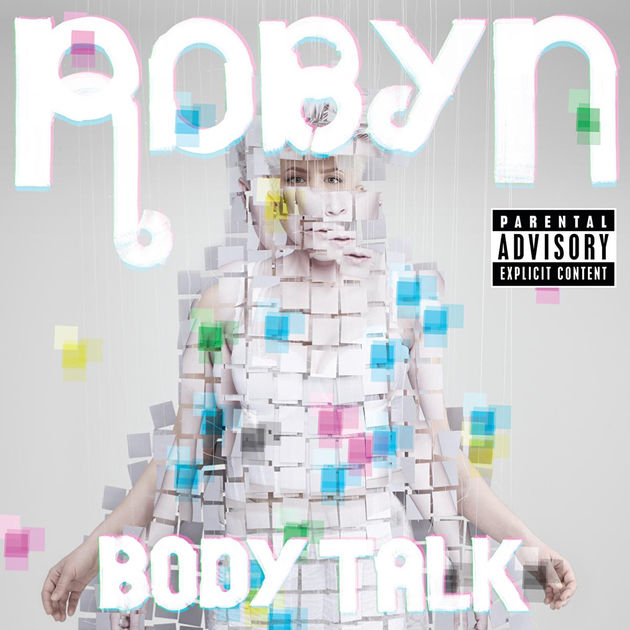
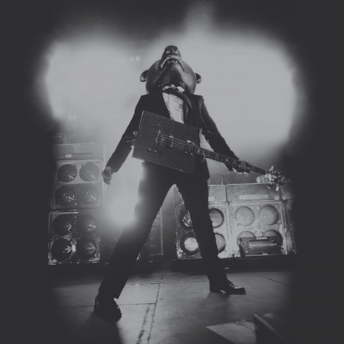
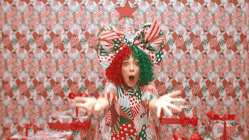
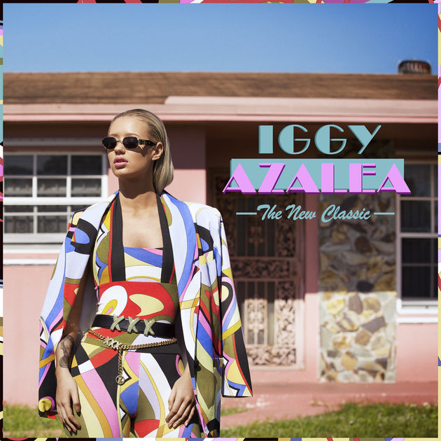
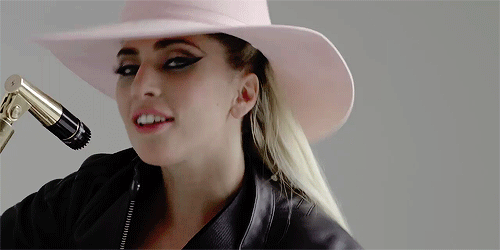
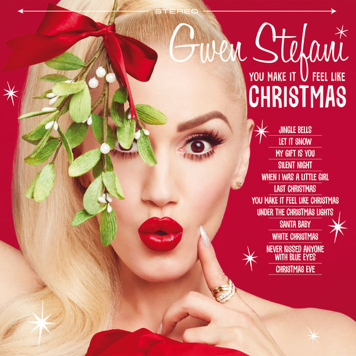

På denna sidan presenterar jag några av mina favoritartister.
| Namn | Omslagsbild | Bandmedlemmar | Senaste album | Land | Källa till information |
|---|---|---|---|---|---|
| Robyn |  | Solo artist | Body talk | Sverige | Länk |
| Teddybears |  | Patrik Arve, Joakim Åhlund och Glenn Sundell (trummor) | Rock on | Sverige | Länk |
| Zara Larsson | |
Solo artist | So good | Sverige | Länk |
| Veronica Maggio | Solo artist | Den första är alltid gratis | Sverige | Länk | |
| Sia |  | Solo artist | Everyday is Christmas | Australien | Länk |
| 5 seconds of summer | Luke Hemmings, Michael Clifford, Calum Hood och Ashton Irwin | Sounds good feel good | Australien | Länk | |
| Iggy Azaela |  | Solo artist | The new classic | Australien | Länk |
| Lady gaga |  | Solo artist | Joanne | USA | Länk |
| Panic! At the disco | |
Brendon Urie | Death of a Bachelor | USA | Länk |
| Gwen Stefani |  | Solo artist | You make it feel like christmas | USA | Länk |